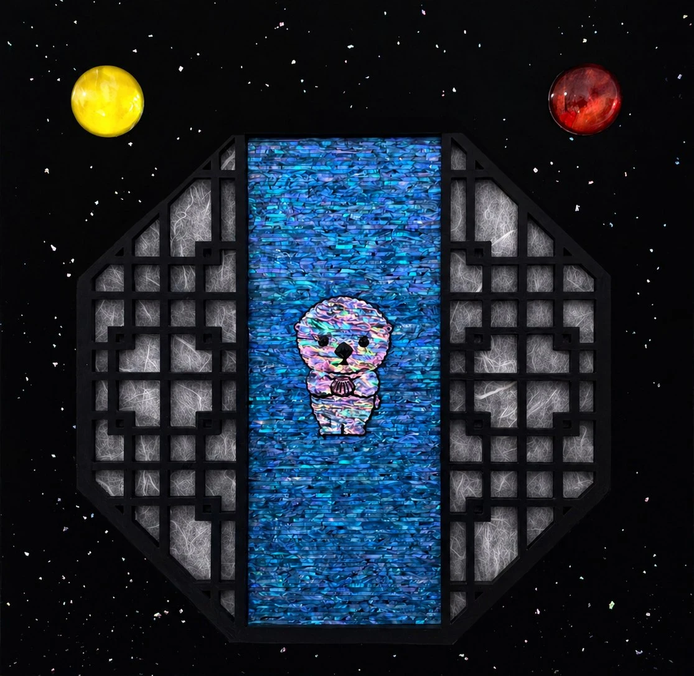

우주조약Outer Space Treaty
Outer Space Treaty우주조약
목심나전칠기(천연자개, 옻칠), 유리, 한지 등 · 37.9 × 37.9 cm · 2026Traditional Korean najeonchilgi on a wood core (natural mother-of-pearl, lacquer), glass, hanji, etc. · 37.9 × 37.9 cm · 2026
팔각 창살 너머는 우주다. 자개로 빚은 해(Sun)와 달(Moon)이 유리 헬멧을 쓴 우주인처럼 그 광활한 공간을 유영한다. 해와 달, 두 천체의 이름을 나란히 부르면 하나의 생명 '해달'이 된다. 창살 안쪽, 자개 바다 위에서 얼빵해달은 배영 중이다. 눈을 감고, 공상 중이다. 1967년 우주조약은 선언한다. 우주는 어떤 국가도 점유하거나 소유할 수 없는 인류 공동의 공간이라고. 지구의 관할권이 닿지 않는 그곳에서, 해달은 아무런 주권에도 귀속되지 않은 채 그저 자유롭게 떠다닌다. 공상은 그 어떤 법도 규율할 수 없는 마지막 치외법권이다. 해(Sun)와 달(Moon)을 나란히 읽으면 '해달'이 된다.Beyond the octagonal lattice lies outer space. Sun and Moon, shaped from mother-of-pearl, drift through that vastness like astronauts in glass helmets. Say their names together — Sun and Moon, hae and dal — and they become one being: Haedal. Inside the lattice, on a sea of mother-of-pearl, Spaced-out Sea Otter floats on its back, eyes closed, lost in thought. The 1967 Outer Space Treaty declares that outer space cannot be claimed or owned by any nation — it belongs to humankind as a whole. There, beyond the reach of any nation's jurisdiction, the otter drifts freely, subject to no sovereignty at all. Daydreaming, it turns out, is the last extraterritoriality no law can touch.
전시 이력Exhibitions
- 2026.04.10 – 2026.04.12 아트쇼핑, 루브르 카루젤, 파리, 프랑스2026.04.10 – 2026.04.12 Art Shopping, Paris, France
- 2026.03.20 – 2026.03.22 언노운바이브 더블룸, 신라호텔, 서울, 대한민국2026.03.20 – 2026.03.22 Unknown vibe the bloom, Shilla Hotel, Seoul